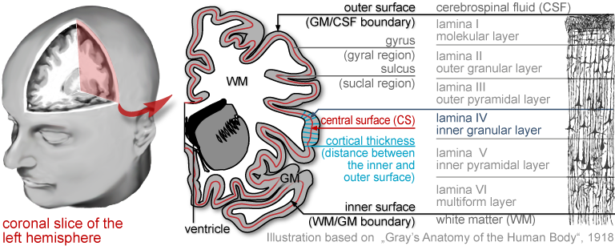
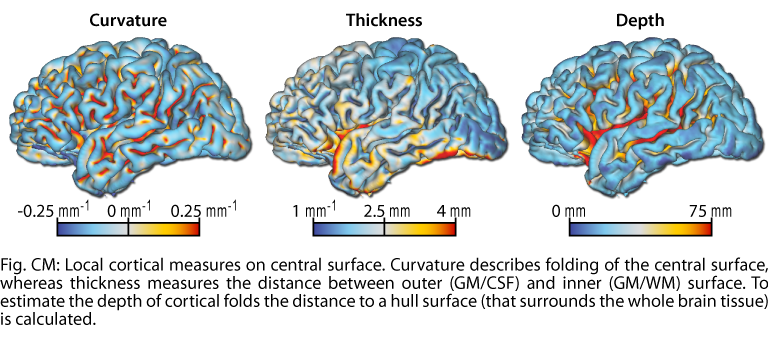

Introduction
Brains constantly change in response to internal and external cues. While most of these changes simply reflect normal development and learning, others could lead to brain diseases or detrimental aging processes. Helping people with the latter kind of changes is one of the central motivators of neurology and psychiatry research. However, many aspects of brain structure and function – as well as their interactions, from the molecular to the cognitive and sociological levels –are still not sufficiently understood to provide a clear biological framework on which clinicians can base their diagnoses and therapeutic decisions. As a consequence, many neuropsychiatric disorders continue to lack promising therapies, and quite a few are still hard to diagnose.
CAT12 focuses on the quantification of macroscopic structures in the brain and on the classification of the changes they undergo e.g. in the early phases of neuropsychiatric disorders like schizophrenia or Alzheimer’s disease. Any findings can be considered to be a contribution to a coherent theoretical framework for brain changes across time and levels of biological organization.
The cerebral cortex can be simplified seen as a highly folded sheet of gray matter (GM) that lies inside the cerebrospinal fluid (CSF) and surrounds a core of white matter (WM). Inwardly folded regions are sulci whereas outwardly folded areas are denoted as gyri. There are three common surfaces to describe this sheet, the outer surface (OS), the inner surface (IS) and the central surface (CS). The CS roughly corresponds to the cytological lamina (or layer) IV (right) and allows a better representation of the cortical GM sheet and improved accuracy of cortical surface measurements.
CAT12 allows an exact and robust classification of the human brain and its 3 tissues classes CSF, GM, and WM. It includes progressive functions to reduce image interferences such as noise and inhomogeneities and allows a powerful local intensity transformation of the original anatomical MR data. Furthermore, it allows reconstruction of the central surface of each hemisphere of the brain and estimation of the cortical thickness and other surface measures. 